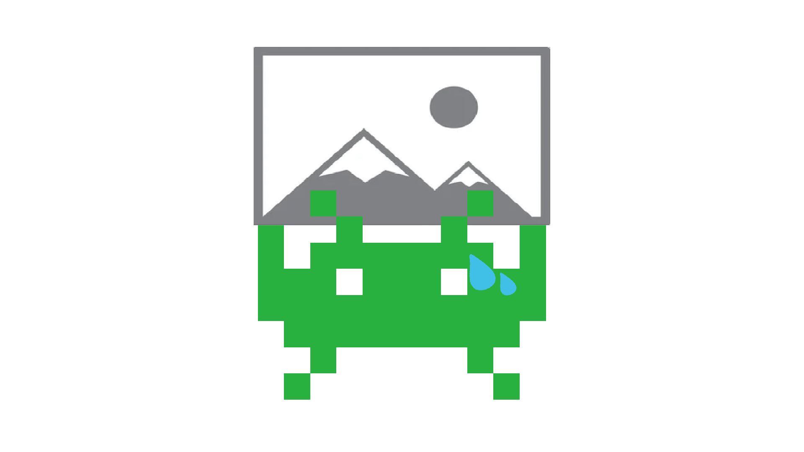

My role in the project was Lead-Developer and Scrum-Master. We used User-Stories and Trello
I worked mostly on the Player Character. I had to make a player that was able to walk, run, crouch, crawl, jump, climb, vault And shoot. which are a lot of actions
For this project we used Unity2020 [LTS] as our main engine. we specifically chose the LTS version for other groups that will expand on this project. We settled on Visual Studio Code for its simplicity and easy acces for everyone.

Game-Engine

Programming Software
I really enjoyed working on this project for my internship. Me and my partner had a lot of freedom durring this entire project and we are happy on what we set up for the next group that are going to continue this project.
Looking back at the start of this project i didn't even think we could have done as much as we accually did. I personally learned a lot about Unity, its new input system, cinnemachine and a lot more things.